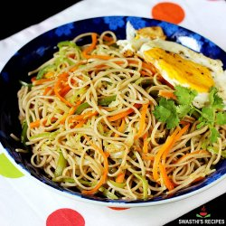

Ingredients
- 2 cups Plain Noodles (150 gm pack)
- 6 cloves of Garlic, minced
- 1 teaspoon minced Ginger
- 1/4 cup finely chopped Spring Onion
- 1/2 cup thinly sliced Capsicum
- 1/2 cup shredded Cabbage
- 1/4 cup julienned Carrot
- 1/4 teaspoon Black Pepper Powder
- 2 teaspoons Soy Sauce
- 1½ teaspoons Chilli Sauce (red or green)
- 1 tablespoon Tomato Ketchup
- 1 tablespoon +1 tablespoon Oil
- Salt to taste
Directions
- Boil the noodles by following step by step recipe of simple noodles or by following the instruction given on the pack of noodles.
- Cut the vegetables as mentioned in ingredients section. Make sure to chop the vegetables as thin as possible as they will take less time to cook.
- Heat 1-tablespoon oil in a wok (chinese style cooking vessel) or a wide mouthed pan over medium flame. Add minced garlic and minced ginger and stir-fry for 30 seconds.
- Add French beans and stir-fry for a minute. Add spring onion, capsicum, cabbage and carrot.
- Stir-fry vegetables until they are cooked but still crunchy for approx. 2-minutes over high flame.
- Add soy sauce, green chilli sauce, tomato ketch up, black pepper powder and salt (please note that we have also added salt while boiling noodles).
- Mix well and cook for a minute.
- Add boiled noodles.
- Mix and toss until noodles are evenly coated with sauces and vegetables for approx. 1-minute. Turn off flame and transfer it to serving plate. Serve it with Hot and Sour soup or Dry Vegetarian Manchurian.